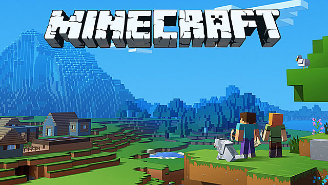

There are many different types of video games. There is a system of categorization based upon its production and budget level. Typically, the higher a game's ranking is (in terms of this categorization), it will be more developed and in a more advanced way, there will be more workers working on said game, and it will have been promoted more than games with a lower ranking.

AAA Games
At the high-end side of the spectrum, we have AAA (read as "triple A") companies.
Some big AAA companies include: Nintendo, Blizzard Entertainment, and Riot Games.
Pictured on the right are the employees of Riot Games. As you can see, they have
the funds to hire hundreds of employees. This would not be possible if they were
not a company with a AAA game.
The ranking of games, from highest to lowest, is as follows:
AAA, AA, A, B, C


Indie Games
You've probably heard of "indie" games before, but it's not on the ranking of games
listed above. This is because most indie games are low budget and are usually not
well advertised.
There are, however, cases of indie games getting very popular over time. One of the
biggest examples includes Minecraft. It's come a far way and has grown a lot by now,
but don't forget that it did start with a single person, which turned into a small team,
which grew into the surely large team that it is today.
Another example would be Stardew Valley. It's not as popular as Minecraft, but it
has done considerably well. It was developed entirely by a single person over the course
of 4 years! He made all the artwork, sounds, etc. by himself. Even now, the developer
has been offered some help in developing the game, but he has chosen to remain true to
his origins and is still developing the game further as a lone wolf.